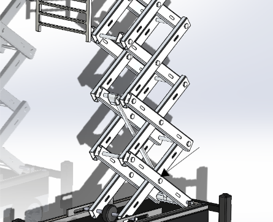
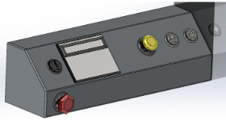
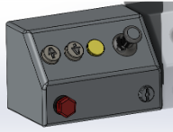

Overview
The Scissor Lift project, developed as part of a mechanical engineering coursework, showcases the innovative design and functionality of the BeyondX5 scissor lift.
Designed with safety, efficiency, and user experience in mind, the lift includes features such as smooth vertical motion, high load capacity, and enhanced portability.
The project combines cutting-edge engineering principles with sustainable materials to ensure cost-effective production and eco-friendliness.
Features
- Vertical reach of 14-18 feet with a load capacity of up to 900 lbs.
- Compact and portable design suitable for indoor construction.
- Enhanced safety features including emergency brakes, harness attachments, and platform locks.
- Environmentally friendly materials such as aluminum and recyclable plastics.
Design Highlights
The BeyondX5 scissor lift design includes:
- A stable base with galvanized steel and lightweight aluminum components.
- A precise control system with upper and lower control boxes for ease of use.
- Stabilizers for added support on uneven surfaces.
- Modular components for easy maintenance and replacement.
Future Enhancements
Planned improvements include:
- Developing a physical prototype for real-world testing.
- Integrating remote operation capabilities and motorized controls.
- Exploring alternative sustainable materials to further reduce environmental impact.
3D Model

SolidWorks 3D Model of the BeyondX5
3D Model

SolidWorks 3D Model of the BeyondX5
Component Model
  SolidWorks 3D Model of the BeyondX5
Watch the Scissor Lift in Action
See the BeyondX5 scissor lift in motion, showcasing its capabilities and design.